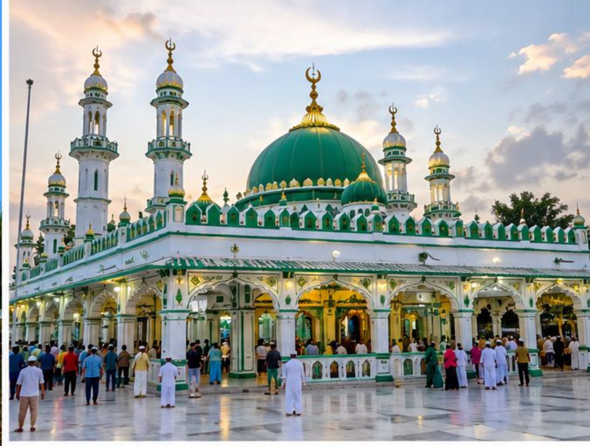
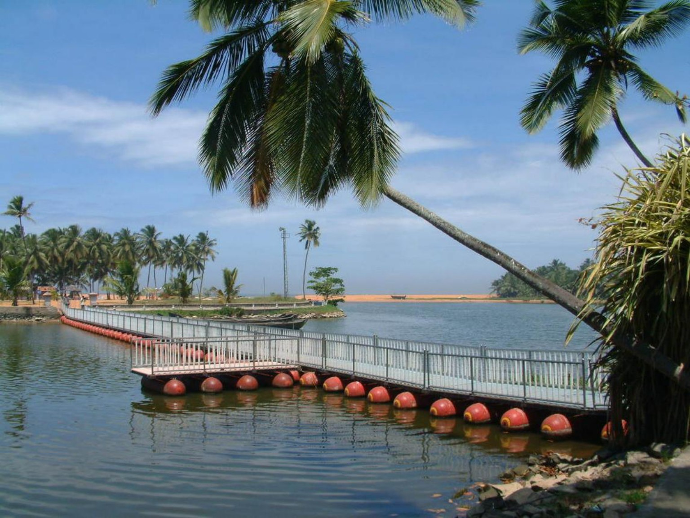
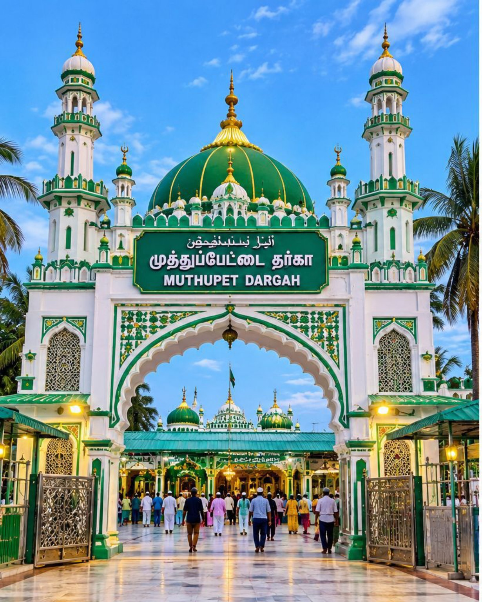

தமிழ்நாடு • സിയാറത്ത് യാത്ര
ഏർവാടി ദർഗ
വിശ്വാസത്തിന്റെയും ആത്മീയ സമാധാനത്തിന്റെയും പുണ്യഭൂമി
ഈ യാത്ര ബുക്ക് ചെയ്യുക


ഏർവാടി ദർഗയിലേക്ക് ഒരു ആത്മീയ യാത്ര
തമിഴ്നാട്ടിലെ പ്രശസ്തമായ തീർത്ഥാടന കേന്ദ്രമായ ഏർവാടി ദർഗയിലേക്ക് കുടുംബത്തോടും സുഹൃത്തുക്കളോടും ഒപ്പം ആത്മീയ അനുഭവവും മനസ്സമാധാനവും നിറഞ്ഞൊരു യാത്ര ഒരുക്കാം.
മിൻഹാ ഹോളിഡേയ്സിനൊപ്പം നിങ്ങളുടെ ആത്മീയ യാത്രകൾക്ക് വിശ്വാസവും സൗകര്യവും.
യാത്ര ആസൂത്രണം ചെയ്യാം
പുറപ്പെടുന്ന സ്ഥലം, തീയതി, യാത്രക്കാരുടെ എണ്ണം എന്നിവ ബുക്കിങ് പേജിൽ നൽകുക.